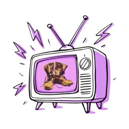

BOOTLEG BROADCAST
Search, skip, restart and pause leave the shared broadcast temporarily. Use RETURN TO BROADCAST to rejoin immediately; a selection returns automatically when it ends.
Full source library · Schedule audit · Version history · v0.33
On touch screens, swipe across the TV to change channel and swipe the remote handle upward to open it.